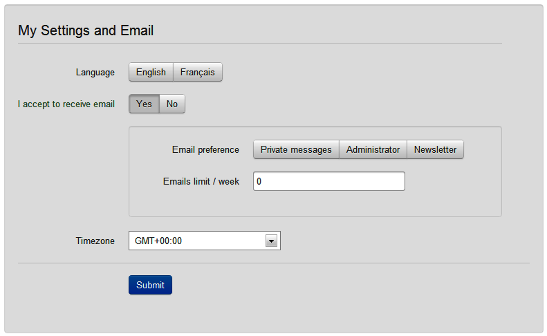

Java is verbose, but you can reduce the noise and express code like natural language with a fluent API
// JUnit API
assertEquals(9, fellowshipOfTheRing.size());
assertTrue(fellowshipOfTheRing.contains(frodo, sam));
assertFalse(fellowshipOfTheRing.contains(sauron));
// AssertJ API (fluent)
assertThat(fellowshipOfTheRing).hasSize(9)
.contains(frodo, sam)
.doesNotContain(sauron);
New elements in Java 8 makes it easier to write a fluent API
// java.time API
Instant.ofEpochMilli(milli)
.atZone(ZoneId.systemDefault())
.toLocalDateTime();
// java stream API
list.stream().filter(Objects::nonNull)
.collect(Collectors.joining(" ");
Many popular libraries propose fluent APIs like
jOOQ, AssertJ, Apache Spark, etc.
Dataset<Row> averagePrice = prices
.filter(value.<String>getAs("insurer").equals("COOL insurer"))
.groupBy("product")
.agg(avg("price").as("average"))
.orderBy(desc("average"));
"A domain-specific language (DSL) is a computer language specialized to a particular application domain. This is in contrast to a general-purpose language (GPL), which is broadly applicable across domains"
Insurer exclusions based on object model (legacy code)
public void check(FieldContext context, FormuleMoto formule, Conducteur conducteur,
Vehicule vehicule, Void unused, Besoins besoins,
Set<EAbTestingScenario> scenarios)
throws ExclusionException {
if (besoins == null) {
return;
}
if (besoins.getDateDebutContrat() == null) {
return;
}
if (!DateHelper.isAfter(besoins.getDateDebutContrat(),
DateHelper.ajouteJoursADate(DateHelper.getToday(), NBR_JOURS),
DateHelper.EPrecision.jour)) {
throw new ExclusionException(DATE_EFFET_PLUS_60_JOURS);
}
}
public ExclusionRule exclusionRule() {
return DOOV.when(dateContrat().after(todayPlusDays(60)))
.excludeFormules()
.withMessage(DATE_EFFET_PLUS_60_JOURS)
.exclusionRule();
}
Hierarchy of 492 legacy classes, no governance or auditability

model-map : Typed two way mapping framework from key value to model. Used at LesFurets as a frontend dictionnary, Cassandra data model, etc.
public class Account extends Identity {
@SamplePath(field = SampleFieldId.LOGIN,
readable = "account login")
private String login;
@SamplePath(field = SampleFieldId.PASSWD,
readable = "account password")
private String password;
}


Using annotations on the domain model, the code generation creates a class FieldIdInfo that contains the typed keys
public static final EnumFieldInfo<Country> COUNTRY = FieldInfoProvider
.<Country> enumField()
.fieldId(SampleFieldId.COUNTRY)
.readable("account country")
.type(Country.class)
.build(ALL);
SampleModel model = new SampleModel();
model.setAccount(new Account());
model.getAccount().setEmail("softshake@geneva.ch");
System.out.println(model.getAccount().getEmail());
FieldModel fieldModel = new SampleModelWrapper(model);
System.out.println(fieldModel.<String> get(EMAIL));
fieldModel.set(EMAIL, "lesfurets@gmail.com");
System.out.println(fieldModel.<String> get(EMAIL));
Usage of jOOQ (Java Object Oriented Query) in our code base
jOOQ generates Java code from your database and lets you build type safe SQL queries through its fluent API
DSL.using(conn)
.selectFrom(BO_INSURANCE)
.where(BO_INSURANCE.STATUS.equal(CONFIRMED.getCode()))
.stream()
.map(InsuranceDAO::InsuranceDto)
.collect(toList());
We use a similar mechanism as jOOQ that introspects the database, generates typed info classes (equivalent to our FieldInfo)
public final TableField<Record, Integer> ID = createField(
"id", org.jooq.impl.SQLDataType.INTEGER.nullable(false), this, "");
compliance : the rules correspond to the specification documents
auditability : understand a rule without looking at the code
governance : maintenance of the rules catalogue
clarity : productivity for developers
The entry point is DOOV#when(StepCondition) and the operation StepWhen#validate returns the validation rule
DOOV.when(accountEmail().matches("\\w+[@]\\w+\\.com")
.or(accountEmail().matches("\\w+[@]\\w+\\.fr")))
.validate()
.withMessage("email finishes with .com or .fr");
A natural language version of the rule is available with ValidationRule#readable
System.out.println(EMAIL_VALID.readable());
> When (email matches '\w+[@]\w+\.com' or email matches '\w+[@]\w+\.fr')
> validate with message "email finishes with .com or .fr"
You can add the rule in one or many registry with ValidationRule#registerOn(Registry)
DOOV.when(accountEmail().matches("\\w+[@]\\w+\\.com")
.or(accountEmail().matches("\\w+[@]\\w+\\.fr")))
.validate()
.registerOn(REGISTRY_ACCOUNT);
The terminal operation ValidationRule#executeOn(FieldModel)
executes the rule
REGISTRY_ACCOUNT.stream()
.map(rule -> rule.executeOn(model))
.filter(Result::isInvalid)
.map(Result::message)
.collect(toList());
The available operations depend on the field type, and the arguments are type safe and validated by the compiler
DOOV.when(userAccountCreation().after(LocalDate.of(2000, 01, 01))).validate();
// ^^^^^^^^^^^^^^^^^^^ ^^^^^^^^^^^^^^^^^^^^^^^^^^^
// date field is type safe here
"In computer science, an abstract syntax tree (AST), or just syntax tree, is a tree representation of the abstract syntactic structure of source code written in a programming language"

The syntax tree always starts with when then you compose a predidate by:
matchAll, matchAny, ou matchOne
The syntax tree implements classic operations on numeric predicates like lesserThan, greaterThan, etc. that takes a numeric value or another numeric field as a parameter

We have operations that are available on the String type like matches and contains that takes a regular expressions as a parameter

Fields of Temporal type have operators that can apply functions like today(), todayPlusDays(), etc. so that the dates are only evaluated at execution time

Let's try to write a validation rule on an IHM

public class Account extends Identity {
@SamplePath(field = SampleFieldId.TIMEZONE,
readable = "account timezone")
private Timezone timezone;
@SamplePath(field = SampleFieldId.PHONE_NUMBER,
readable = "account phone number")
private String phoneNumber;
@SamplePath(field = SampleFieldId.EMAIL,
readable = "account email")
private String email;
@SamplePath(field = SampleFieldId.EMAIL_ACCEPTED,
readable = "account email accepted")
private boolean acceptEmail;
@SamplePath(field = SampleFieldId.EMAILS_PREFERENCES,
readable = "account préférences mail")
private Collection emailTypes = new HashSet<>();
}
public static boolean validateAccount(User user, Account account, Configuration config) {
if (config == null) {
return false;
}
if (user == null || user.getBirthDate() == null) {
return false;
}
if (account == null || account.getCountry() == null || account.getPhoneNumber() == null) {
return false;
}
if (YEARS.between(user.getBirthDate(), LocalDate.now()) >= 18
&& account.getEmail().length() <= config.getMaxEmailSize()
&& account.getCountry().equals(Country.FR)
&& account.getPhoneNumber().startsWith("+33")) {
return true;
}
return false;
}
DOOV.when(userBirthdate().ageAt(today()).greaterOrEquals(18L)
.and(accountEmail().length().lesserOrEquals(configurationMaxEmailSize()))
.and(accountCountry().eq(Country.FR))
.and(accountPhoneNumber().startsWith("+33")))
.validate()
.registerOn(REGISTRY_ACCOUNT, VALID_ACCOUNT);
We use JMH to check the performance of the DSL
Benchmark Mode Samples Mean Mean error Units
o.m.BenchmarkOldRule.valid_email thrpt 25 1860.553 42.269 ops/ms
o.m.BenchmarkRule.valid_email thrpt 25 1733.465 18.461 ops/ms
Performance of the DSL and POJO code are very close
DSL rules are strongly typed : type issues are visible during the java compilation
public class Account {
@NotNull @Email
private Email email;
}
Bean Validation constraints are based on field annotation but the cross validation between fields are only available through the extension mechanism
public class Account {
@Pattern(regexp = "(FR)|(UK)")
private String country;
@Pattern(regexp = "???")
private String phoneNumber;
}
Bean validation rules are not written with a natural language syntax
and does not provide a syntax tree
@Size(min = 10, max = 200,
message = "About Me must be between 10 and 200 characters")
private String aboutMe;
userAboutMe().length().between(10, 200).validate().readable()
> When user about me length is between 10 and 200, validate with message...
DSL rules can be streamed from the registry and displayed in a readable format using readable()
Registry.ACCOUNT.stream()
.map(ValidationRule::readable)
.forEach(System.out::println);
When (account email matches \w+[@]\w+\.com or account email matches \w+[@]\w+\.fr),
validate with message "email finishes with .com or .fr"
When (match any [((account country equals FR and ...),
((account country equals UK and ...)]),
validate with empty message
The syntax tree allows to pretty print the rule
When
match any
- account country equals 'FR' and
account language equals 'FR' and
account phone number starts with '+33'
- account country equals 'UK' and
account language equals 'EN' and
account phone number starts with '+45'
validate with
empty message
What are the benefits of our DSL versus POJO code?
Add doov-core as a dependency to use annotations and framework
<dependency>
<groupId>io.doov</groupId>
<artifactId>doov-core</artifactId>
<version>LATEST</version>
</dependency>
Decorate your model, run the code generator and write your rules:
DOOV...
contains(), isEmpty(), hasSize(), etc